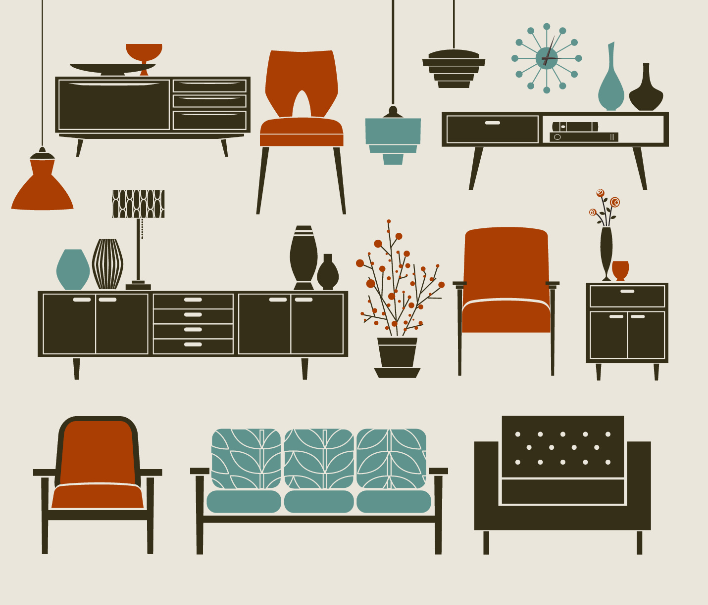
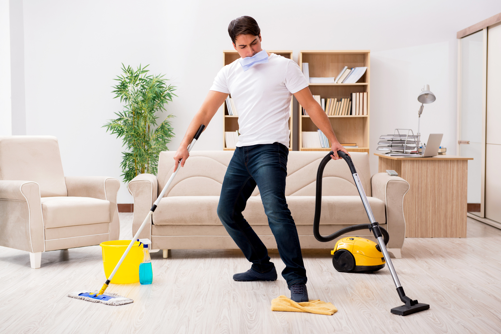
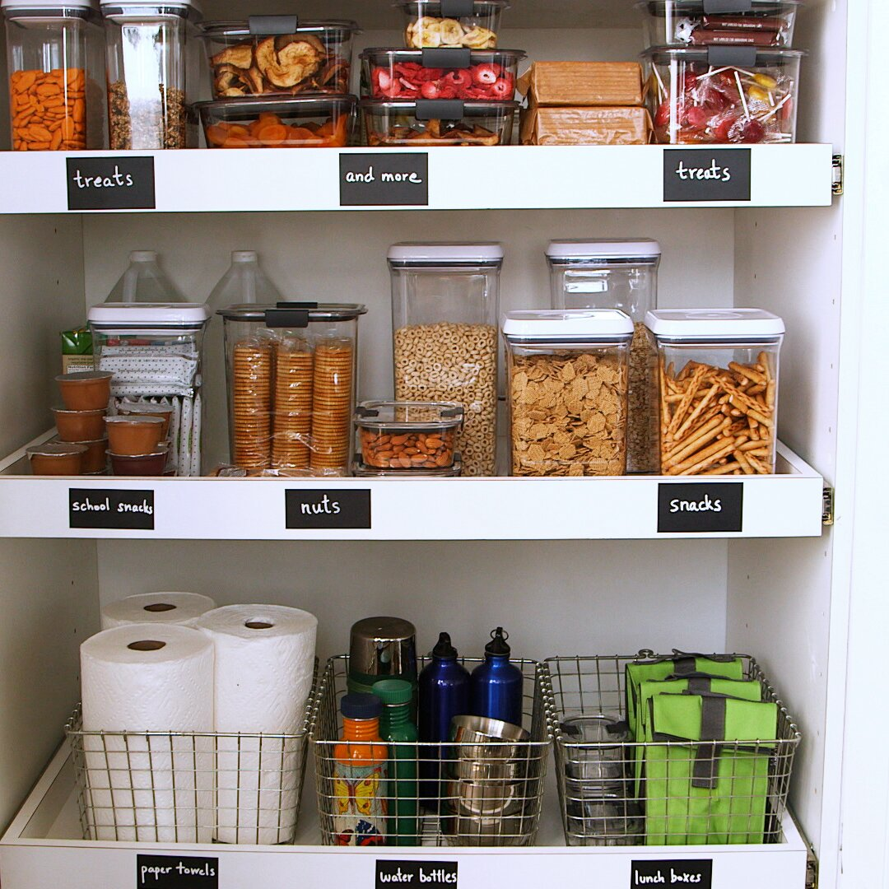

Home Projects
Being home all day can be daunting, specially in these times when we have to stay home. One way to pass the time is to give yourself some home projects.
Rearrange Things

Renovating your entire living room or splurging on a new bedroom set likely isn’t in the cards at the moment, but that doesn’t mean you can’t make some changes.
Try a new furniture layout: It’s easy to get in a rut with the same ol’ furniture setup, but what if you tried something new? Move the couch to a different wall, adjust where your armchair sits, or mix things up by swapping rugs from one room to another. Even switching a lamp from a side table to another spot in your house could brighten up a space in new ways.
Restyle your bookshelves: Even avid readers don’t change up their bookshelves all that often, so now is the time to rethink them. If you’re focused on the literature, arrange your books by alphabetical order or by theme.
Cleaning Projects

There’s a lot of talk about cleaning these days, and rightly so. But beyond disinfecting all of your high-touch surfaces, it’s also past time to buckle down on the tasks you avoid doing.
Clean your vents and baseboards: Heating and vent covers accumulate dust over time, and cleaning them can help reduce allergens in your home and increase the efficiency of your air conditioning or heating unit. Vacuum the vents with a dusting brush attachment or wipe with a dry microfiber cloth—avoid using water or other cleaning products, because they can smear the dust.
Go under your bed: Vacuuming and cleaning the toilets are usually on the weekly to-do list, but when was the last time you cleaned underneath your bed? Don’t wait until the next time you move to clear out the dirt—move the bed, empty out any storage boxes you might have underneath, and vacuum the dust. Plus: You might be surprised at the things you’ll find (hello, missing phone charger).
Clean out your bathroom drawers: This is another task we put off when we don’t have the time. Our bathroom drawers take a lot of daily abuse; after emptying the drawers you’ll likely find hair, spilled makeup, toothpaste, and so on. Once the insides are free of gunk, toss the junk and reorganize what’s left.
Organizing

There’s no shortage of home organization projects that can yield big results, but the options below won’t require a trip to the store.
Tackle the closets: Face it: Even the most organized among us can have a messy closet, and now is the time to make it right. Start by taking everything out of the closet, purging what’s no longer used, and cleaning the interior. If it’s a clothes closet, sort your clothes by category and be sure to hang delicate items and stack thicker things like denim. Put your most-used items at the front, while seasonal or rarely used pieces can go up higher or in the back.
Tidy up the entryway: Whether you have a spacious mudroom or a tiny coat stand, things accumulate in our daily life. Reevaluate your hooks: Are they helpful? Hanging at the right height? Do you need more or fewer of them? Vacuum or shake out any door mats you have, then purge any knick knacks or unused items hanging around.
Label your supplies: A few labels can go a long way in creating a more organized household. Have storage bins or containers in your kitchen pantry, under the bed, or in a linen closet? A label maker works great if you have it, but you can also write on regular paper and tape the labels on.